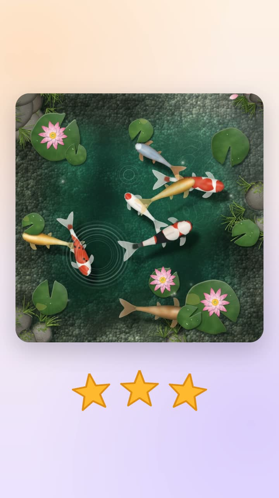
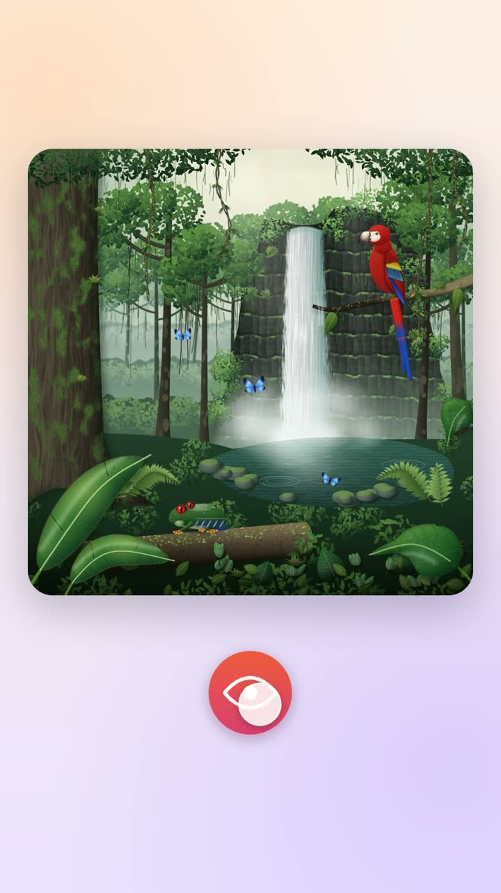
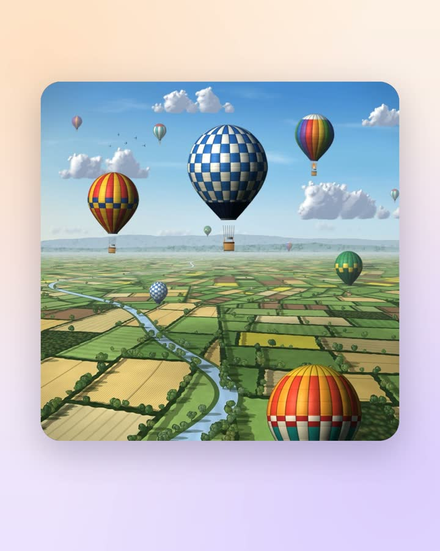
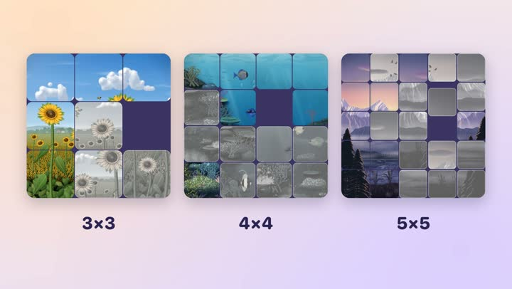
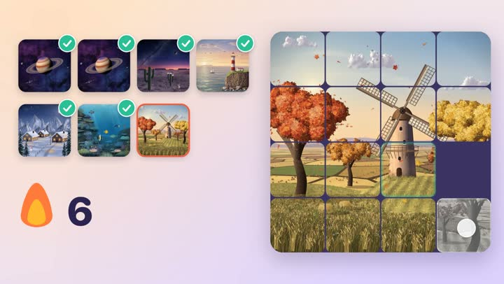
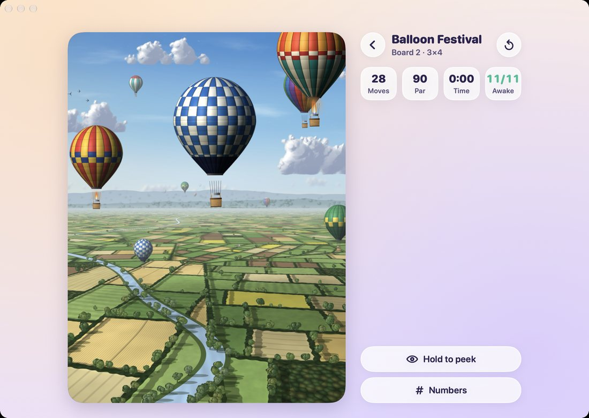
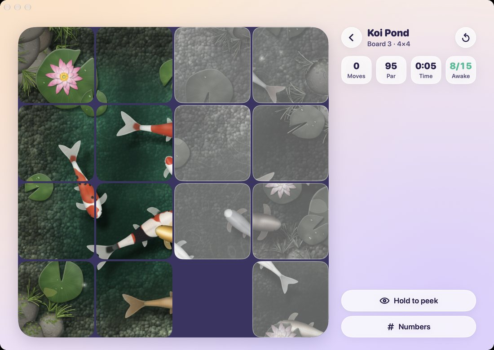
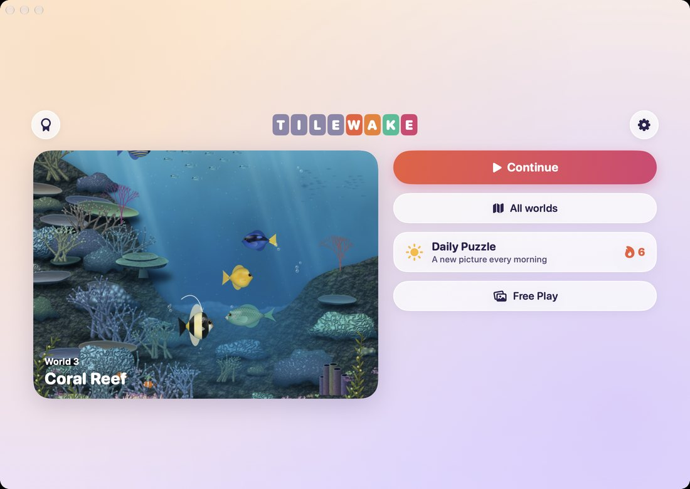
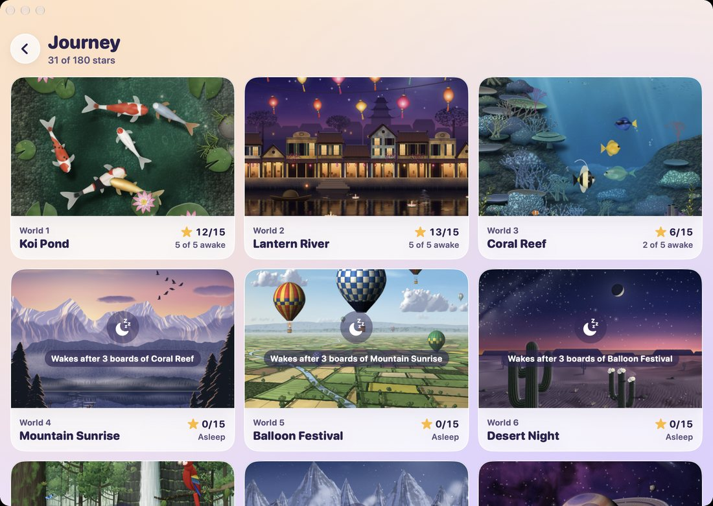
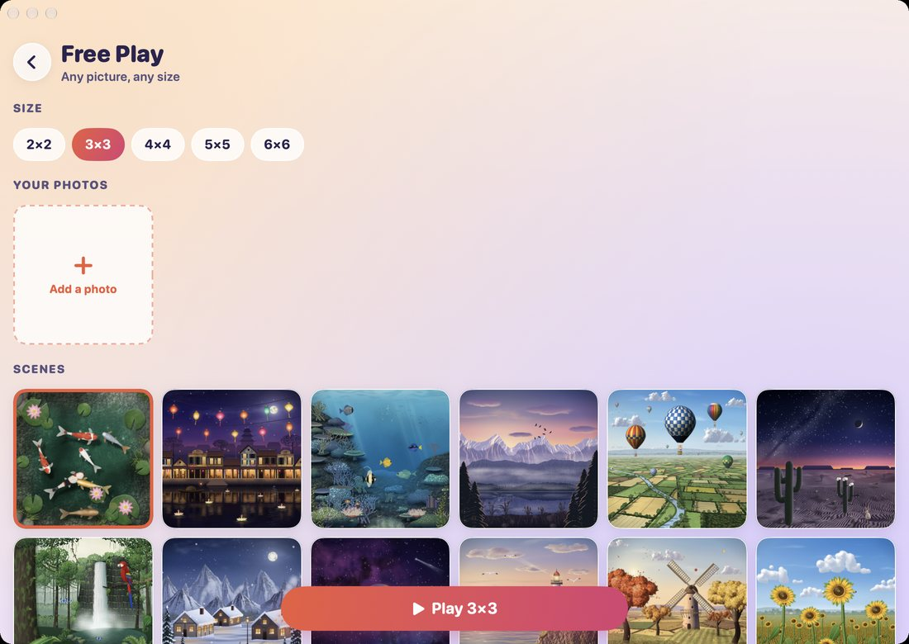

Csúsztatós játék, amelynek képei felébrednek
Bepillantás
Utazás 12 megfestett világon át
3×3-tól 5×5-ig terjedő táblák
Napi rejtvény


Mit tud
A Tilewake csúsztatós játék élő képekkel. A helyén lévő csempe felébred, és a jelenet hozzá tartozó darabja mozogni kezd; a rossz helyen lévő csempe alszik, mozdulatlanul és szürkén. Az utolsó lépés felébreszti az egész képet.
- Utazás 12 megfestett világon át, a koi-tótól és a lámpásfolyótól a havas falun át a világűr-pályáig, mindegyik saját hangokkal és egy fináléval, amikor felébred.
- 3×3-tól 5×5-ig terjedő táblák, parral és legfeljebb három csillaggal, valamint minden táblához négy további keverés az újrajátszáshoz.
- Napi rejtvény sorozattal, és hozzá egy widget iPhone-on, iPaden és Androidon.
- Szabad játék bármilyen méretben, a saját fotóiddal képként.
- Bepillantás az egész képre, számok a csempéken, valamint nyugodt hangstílusok és zenék közül választhatsz.
Ingyen játszható: az első két világ, a napi rejtvény és a 3×3-as szabad játék. Egyetlen vásárlással feloldható minden világ, minden méret és a saját fotóid. iOS 17, macOS 14 Sonoma vagy Android 8, illetve újabb rendszert igényel.


Adatvédelem egyetlen bekezdésben
A Tilewake-ben nincs reklám, saját fiók, analitika és követés. A haladásod és a fotóid az eszközödön maradnak. A teljes adatvédelmi irányelvek ugyanezt mondják el részletesebben.
További appok ugyanattól a fejlesztőtől
Kis appok, mindegyik arra készült, hogy egy dolgot jól csináljon. Nincs fiók, nincs reklám, és egyik sem követ nyomon.
 StatuetteCPU, memória, lemez és hálózat a menüsorban.Mac
StatuetteCPU, memória, lemez és hálózat a menüsorban.Mac TocketteIdőzítő, egy húzásnyira a menüsortól.Mac
TocketteIdőzítő, egy húzásnyira a menüsortól.Mac ZonetteMinden fontos időzóna egy kattintásnyira.MaciPhone és iPadAndroid
ZonetteMinden fontos időzóna egy kattintásnyira.MaciPhone és iPadAndroid LunetteA Hold és a Nap egy pillantásra.MaciPhone és iPadAndroid
LunetteA Hold és a Nap egy pillantásra.MaciPhone és iPadAndroid LunaretteA holdnaptár négy hagyomány szerint.MaciPhone és iPadAndroid
LunaretteA holdnaptár négy hagyomány szerint.MaciPhone és iPadAndroid PausetteKíméletes szünetek a szemednek és a hátadnak.Mac
PausetteKíméletes szünetek a szemednek és a hátadnak.Mac PoisetteÜlj egyenesen – a füledben lévő AirPods emlékeztet.MaciPhone és iPad
PoisetteÜlj egyenesen – a füledben lévő AirPods emlékeztet.MaciPhone és iPad HushetteNyugodt háttérhangok, amelyek sosem ismétlődnek.MaciPhone és iPadAndroid
HushetteNyugodt háttérhangok, amelyek sosem ismétlődnek.MaciPhone és iPadAndroid TapsodyMechanikus billentyűzet hangja gépelés közben.Mac
TapsodyMechanikus billentyűzet hangja gépelés közben.Mac ThrumlineA pulzusod élőben a menüsorban.Mac
ThrumlineA pulzusod élőben a menüsorban.Mac NightjarÉbren tartja a Macet. Becsszóra.Mac
NightjarÉbren tartja a Macet. Becsszóra.Mac UmbretteMinden elsötétül, csak az ablak nem, amelyben dolgozol.Mac
UmbretteMinden elsötétül, csak az ablak nem, amelyben dolgozol.Mac PrompetteTeleprompter közvetlenül a kamera alatt.MaciPhone és iPadAndroid
PrompetteTeleprompter közvetlenül a kamera alatt.MaciPhone és iPadAndroid TallettePapírszalag az összeadásaidhoz.MaciPhone és iPadAndroid
TallettePapírszalag az összeadásaidhoz.MaciPhone és iPadAndroid ProbetteEgy médiafájl minden műszaki adata, érthetően.MaciPhone és iPadAndroid
ProbetteEgy médiafájl minden műszaki adata, érthetően.MaciPhone és iPadAndroid BindetteHangfájlokból egyetlen rendes hangoskönyv.MaciPhone és iPadAndroid
BindetteHangfájlokból egyetlen rendes hangoskönyv.MaciPhone és iPadAndroid LettretteNyisd meg a winmail.dat és .msg fájlokat úgy, ahogy elküldték őket.MaciPhone és iPadAndroid
LettretteNyisd meg a winmail.dat és .msg fájlokat úgy, ahogy elküldték őket.MaciPhone és iPadAndroid Nhanh TayÁllíts sorba négy választ. Gyorsan.MaciPhone és iPadAndroid
Nhanh TayÁllíts sorba négy választ. Gyorsan.MaciPhone és iPadAndroid PinetteJegyzetek, amelyek szem előtt maradnak.MaciPhone és iPadAndroid
PinetteJegyzetek, amelyek szem előtt maradnak.MaciPhone és iPadAndroid UsagetteA Claude használati korlátai a menüsorban.Mac
UsagetteA Claude használati korlátai a menüsorban.Mac SquiggoRajzolj egy barátságos társsal.MaciPhone és iPadAndroid
SquiggoRajzolj egy barátságos társsal.MaciPhone és iPadAndroid ForemanMunkák, árajánlatok és számlák szakembereknek.MaciPhone és iPadAndroid
ForemanMunkák, árajánlatok és számlák szakembereknek.MaciPhone és iPadAndroid Chăm luyệnGyakorlás vietnámi alsósoknak, felolvasva.MaciPhone és iPadAndroid
Chăm luyệnGyakorlás vietnámi alsósoknak, felolvasva.MaciPhone és iPadAndroid SalahImaidők az egész családnak.MaciPhone és iPadAndroid
SalahImaidők az egész családnak.MaciPhone és iPadAndroid